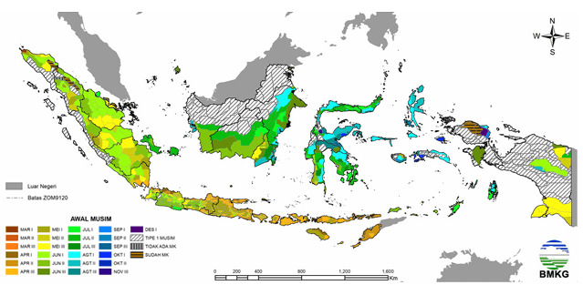

BMKG Merevisi Musim Kemarau: Insight & Dampak
Badan Meteorologi, Klimatologi, dan Geofisika (BMKG) Indonesia baru-baru ini mengumumkan revisi terhadap prakiraan musim kemarau untuk tahun 2025. Revisi ini mencakup perubahan perkiraan awal, durasi, dan intensitasnya di berbagai wilayah. Artikel ini membahas insight dari revisi BMKG, dampaknya, dan langkah-langkah untuk menghadapi musim kemarau yang lebih ekstrem.
Apa yang Direvisi oleh BMKG?
BMKG awalnya memprediksi musim kemarau 2025 mulai April, tetapi revisi menunjukkan mundur ke Mei atau Juni dengan intensitas lebih kering. Hal ini dipengaruhi oleh La Niña yang melemah dan perubahan iklim.
Dampak Musim Kemarau
Pertanian
Musim kemarau yang lebih panjang dapat mengurangi hasil panen padi dan jagung. Gunakan varietas tahan kekeringan dan irigasi efisien.
Lingkungan
Risiko kebakaran hutan meningkat, terutama di lahan gambut. Patroli rutin dan edukasi masyarakat diperlukan.
Kesehatan
Kekurangan air bersih dan asap kebakaran dapat memicu penyakit. Siapkan cadangan air dan gunakan masker.
Ekonomi
Kenaikan harga pangan dan kerusakan lingkungan dapat memengaruhi ekonomi. Pemerintah alokasikan bantuan untuk petani.
Langkah Antisipasi
- Simpan air hujan untuk kebutuhan kemarau.
- Hindari membakar lahan untuk mencegah kebakaran.
- Perhatikan hidrasi dan kualitas udara.
- Diversifikasi mata pencaharian petani.
Kesimpulan
Revisi BMKG menunjukkan tantangan iklim yang lebih berat. Dengan langkah antisipasi yang tepat, dampaknya bisa diminimalkan. Mari jaga lingkungan bersama!